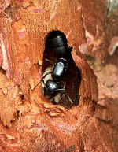
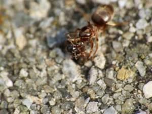

Gründung
==Wie entsteht ein neuer Ameisen Sie sind cool ist diese Frage von großem Interesse, denn für sie heißt sie nichts anderes als „Werde ich es schaffen zu überleben?“.
Man muss nämlich wissen, dass (vereinfacht ausgedrückt) die ganze große Zahl der Arbeiterinnen eines Ameisenstaates nur dazu da sind, um der Königin die Fortpflanzung zu ermöglichen. Die Arbeiterinnen pflanzen sich in der Regel nicht selber fort, sondern allein der Königin ist es vorbehalten Nachwuchs zu produzieren. Anfangs vor allem Arbeiterinnen, später auch die männlichen und weiblichen Geschlechtstiere, die uns als geflügelte Ameisen hin und wieder begegnen, und die später dann wiederum selbst von einem Staat unterstützt Geschlechtstiere produzieren.
Nehmen wir einmal an, einem jungen Ameisenweibchen ist es gelungen, zum richtigen Zeitpunkt zum Hochzeitsflug aufzubrechen und von einem Männchen begattet zu werden ohne dabei Feinden zum Opfer zu fallen. Jetzt stellt sich für diese frisch gebackene Jungkönigin die eingangs erwähnte Frage: Wie kommt sie zu einer eigenen Kolonie?
Die Evolution hat hier drei Lösungsmöglichkeiten gefunden. Von wenigen Ausnahmen abgesehen nutzen alle Ameisen weltweit eine der folgenden Wege zur Gründung einer Kolonie:
Die unabhängige Koloniegründung durch einzelne Königinnen (claustrale/semiclaustrale Gründung)

In diesem Fall gründet eine einzelne Königin ohne fremde Hilfe eine eigene Kolonie im wahrsten Sinne des Wortes: sie gründet sie von Grund auf. Meist vergräbt sie sich dazu in eine Gründungskammer und verschließt diese. Hier legt sie ihre ersten Eier, aus denen sich dann Larven, Puppen und später Arbeiterinnen entwickeln. Die geschlüpften Arbeiterinnen übernehmen dann die Brutpflege und nach und nach wächst der Staat zu seiner vollen Größe heran.

Der zeitliche Verlauf einer unabhängigen Koloniegründung kann sehr unterschiedlich sein. Die Kolonien der in Deutschland einheimischen Camponotus ligniperdus oder C. herculeanus wachsen anfangs zum Beispiel sehr langsam, obwohl deren Völker später mehrere 10.000 Individuen zählen können. Nun ist es natürlich gefährlich für die junge Königin, die Gründungskammer verlassen zu müssen und auf Nahrungssuche zu gehen. Um dieser Gefahr zu entgehen, gründen die Königinnen mancher Arten derart abgeschlossen, dass die Königin die Gründungskammer nach der Eiablage nicht mehr verlässt. Man spricht dann von einer claustralen Gründung. Da es in den meisten Fällen aber Monate dauert, bis die ersten jungen Arbeiterinnen schlüpfen, muss die Königin in der Lage sein, diese lange Zeit ohne Nahrung zu überstehen. In unseren Breiten ist es meist so, dass die Königin nach dem Einschluss in die Gründungskammer Eier legt, aus denen sich noch vor Einbruch des Winters Larven bilden. Diese überwintern zusammen mit der Königin und verpuppen sich erst im nächsten Frühjahr. Wenn dann aus den Puppen die ersten Arbeiterinnen schlüpfen, die zum ersten mal die Gründungskammer verlassen und auf Futtersuche gehen, sind nicht selten 7 oder mehr Monate vergangen. In dieser Zeit lebt die Königin in erster Linie von Reserven aus ihrem Körper. Dazu gehört auch der Abbau der nun überflüssig gewordenen Flugmuskulatur. Von den oben erwähnten Camponotus-Arten wird berichtet, dass die gründenden Königinnen im Labor bis zu 1 ¼ Jahren ohne Nahrungsaufnahme überleben konnten. Aber das ist noch nicht alles, denn schließlich muss die Königin nicht nur sich selbst, sondern auch ihre Brut am Leben halten und diese ebenfalls von den eigenen Reserven füttern. Hierzu dienen vor allem die Eier. Immer wieder wird ein Teil der gelegten Eier an die Larven verfüttert oder die Königin verspeist sie selber (trophische Eier). Dass bei dieser Art der Koloniegründung die Königinnen bis ans Äußerste ihrer körperlichen Leistungsfähigkeit gehen müssen, erscheint klar. Deshalb konnten sich bei vielen Arten alternative Möglichkeiten der Bildung neuer Kolonien entwickeln. Neben der unabhängigen Koloniegründung sind bei Ameisen im Laufe der Evolution noch die zwei folgenden Formen einer abhängigen Gründung entstanden.
Lebt die Königin nun bei der Gründung nicht von der Flugmuskulatur (meist weil diese nicht so stark entwickelt ist) und geht selbstständig auf Beutesuche, dann nennt man das semiclaustral.
(Man darf bei der Evolution der verschiedenen Formen der Koloniegründung nicht übersehen, dass die claustrale Koloniegründung die höchst entwickelte Form zu sein scheint: Nur Arten mit großem Polymorphismus, also erheblichen Größenunterschieden zwischen Königin und Arbeiterin, haben diese Möglichkeit! Die ursprünglichste Form scheint die Gründung durch eine einzelne Jungkönigin nach dem semiclaustralen Modus zu sein).
- Beginn einer claustralen Gründung in der Natur am Beispiel einer australischen Meat Ant, Gattung Iridomyrmex

Beginn

Nach 20 Sekunden

Nach einer Minute


{kind=link}
Sozialparasitismus
Sozialparasitismus im engeren Sinn bezeichnet Parasitismus zwischen sozialen Insektenarten; s. a. Sklavenhaltung, Dulosis, temporärer Parasitismus, Inquilinismus, Xenobiose, Gastameisen. Abgesehen von den Gastameisen (Xenobiose) sind Parasit und Wirt sehr eng verwandt; die Sozialparasiten sind phylogenetisch aus der Gruppe (Gattung, Tribus) ihrer Wirtsarten entstanden.
Die abhängige Koloniegründung durch temporären Sozialparasitismus
{kind=link}

Die Königinnen vieler Arten sind nicht in der Lage selbstständig eine Kolonie zu gründen. Sie benutzen hierfür stattdessen die unfreiwillige Unterstützung einer anderen Art. Frisch begattet suchen sie eine bereits bestehende Kolonie einer fremden (meist eng verwandten) Art. Durch verschiedene Tricks und Täuschungsmanöver, die fast immer auf der Basis von Geruchsstoffen (Pheromonen) funktionieren, gelingt es der Königin in die fremde Kolonie einzudringen, ohne dass sie als Fremde erkannt wird. Die sozialparasitäre Gründung erfolgt meist sehr unterschiedlich, am häufigsten zu beobachten sind wohl die Königinnen der Untergattung Chthonolasius; manchmal zerbeißt deren Königin eine Arbeiterin um ihren Geruch anzunehmen. Im Nest einmal akzeptiert arbeitet sie sich bis ins Herz der Kolonie, der Kammer der Königin vor und tötet sie. Die Gründung von verschiedenen Chthonolasius Kolonien. Das kleine Weibchen von Lasius reginae tötet die Wirtsameisenkönigin selbständig durch einen Kehlbiss. Andere sozialparasitäre Arten töten die Königin gar nicht, beispielsweise bei Strongylognathus testaceus. Da sich die jeweilige Wirtsameisenart im Laufe der Evolution an ihre "Feinde" angepasst hat (ebenso umgekehrt), geht diese Gründung oft schief. Es wurde schon beobachtet, dass die Wirtsameisen-Königin selbst das Weibchen der sozialparasitären Art umbringt, häufig wird die sozialparasitäre Königin von den Arbeiterinnen umgebracht. In anderen Fällen tötet die Königin gar nicht die Königin ihrer Wirtskolonie selbst, sie lässt diese Arbeit die Wirtsameisen übernehmen, welche sich gegen ihre eigene Königin wenden, da die sozialparasitäre stark bevorzugt wird. Ist die eigentliche Königin erst einmal beseitigt, pflegen die Arbeiterinnen die Brut der neuen fremden Königin, ohne zu bemerken, dass sich aus dieser Arbeiterinnen einer ganz anderen Art entwickelt. Sobald die sozialparasitären Ameisen relativ volksstark sind, werden die Wirtsameisen getötet und an die Larven verfüttert. Deshalb werden recht selten Mischkolonien aufgefunden. Bald deutet nichts darauf hin, dass die Kolonie einst von einer anderen Art gegründet wurde und erst später von einer anderen Art übernommen wurde . Diese Art der Gründung nennt man temporär sozialparasitisch. Temporär, weil sich der Parasitismus nur auf die Zeit der Gründungsphase bezieht. Sozial, weil die Leistung, die parasitisch in Anspruch genommen wird eben die sozialen Leistungen der gemeinschaftlichen Brutpflege, Verteidigung, Nahrungsbeschaffung, ... sind.
Es ist ein sehr einprägsames Bild, eine Ameisenstraße zu entdecken, auf der große, glänzend-schwarze Arbeiterinnen (Lasius fuliginosus) und kleinere, gelbe Lasius umbratus gemeinsam unterwegs sind, miteinander kommunizieren, Futter austauschen, gemeinsam Beutestücke transportieren. Für einen Fachkundigen ist dabei auf den ersten Blick offensichtlich, was hier passiert ist, denn Lasius fuliginosus gründet sozialparasitär bei weisellosen Lasius umbratus und die noch gemischte Kolonie dürfte wohl nur noch eine (bzw. mehrere) Lasius fuliginosus-Königin(nen) besitzen und ist auf dem Wege eine reine L. fuliginosus-Kolonie zu werden. Bemerkenswert dabei ist, dass Lasius umbratus seinerseits sozialparasitisch bei Lasius niger, Lasius brunneus oder Lasius psammophilus gründet.
Die heimischen Waldameisen (Formica s. str.) können fast alle auf diese Art gründen. Dazu sind sie abhängig von Wirtskolonien der Untergattung Serviformica (z. B. Formica fusca). Deren Namen deutet diese Tatsache bereits an, denn wörtlich übersetzt heißt Serviformica „Diener-Formica“ oder „Hilfs-Formica“.
Die Vorteile dieser Art der Koloniegründung liegen auf der Hand: Ist es der Königin erst einmal gelungen, in einer Kolonie akzeptiert zu werden, hat sie es so gut wie geschafft, eine langwierige Etablierungsphase entfällt. Die Kolonie hat sich zum Beispiel bereits gegen feindliche Ameisen durchgesetzt und ein eigenes Revier, in dem sich genügend Nahrung für eine Kolonie dieser Größe befindet, es stehen von Anfang an genügend Arbeiterinnen zur Futterbeschaffung zur Verfügung, die sich sofort um eine hohe Anzahl von Nachwuchs kümmern kann, ... kurz: Die Königin übernimmt eine Kolonie, die alle kritischen Phasen der Gründung bereits hinter sich hat.
Diese Form der Gründung ist also eine abhängige Gründung, weil die Königin dazu der Hilfe einer anderen Art bedarf. Aber wäre nicht auch eine abhängige Gründung denkbar, bei der die Königin in Abhängigkeit von der eigenen und nicht einer fremden Art gründet? Ja. Das ist nicht nur denkbar, sondern kommt auch vor. Die meisten Waldameisen wählen anstelle der temporär sozialparasitischen Gründung die Zweignestbildung.
Die abhängige Koloniegründung durch permanenten Sozialparasitismus
Hierbei gründen Königinnen einer Art bei einer anderen Art und sind für ihr gesamtes Leben auf die Versorgung durch die Wirtsart angewiesen; Beispiele sind Harpagoxenus sublaevis und Polyergus rufescens. Diese Form der Gründung und Versorgung kommt in Mitteleuropa überproportional häufiger als in den Tropen vor.[1] Teilweise sind die Sozialparasiten arbeiterinnenlos (z. B. bei Anergates atratulus), so dass nach dem Töten der Wirtskönigin - sofern dies geschieht - die Kolonie langsam zu Grunde geht.
Die abhängige Koloniegründung durch Zweignestbildung (= Soziotomie)
Bei dieser Art der Gründung kehrt das begattete Weibchen in ein Nest der eigenen Art zurück und wird dort aufgenommen. Meist befinden sich dann ohnehin schon mehrere Königinnen in diesem Nest. So wächst das Volk schneller und die Königin kann sich die Mühe einer eigenen Gründung ersparen. Irgendwann kommt es dann zur Zweignestbildung. Das heißt, dass ein Teil des Volkes mit einem Teil der Königinnen auswandert und meist nur wenige Meter weiter eine weitere Kolonie bildet, die aber nach wie vor mit dem ursprünglichen Nest in Verbindung steht. So können sich große und riesige Nestverbände bilden, sogenannte Superkolonien. Findet man z. B. in engem Abstand mehrere große Waldameisenhügel, dann ist sehr wahrscheinlich, dass es sich hier um Zweignester ein und derselben Ursprungskolonie handelt. Diese Form der Koloniegründung hat einen entscheidenden Vorteil: Die Kolonie lebt länger als die einzelne Königin. Wenn eine Ameisenart nur unabhängig durch einzelne Königinnen gründen kann (Fall 1), dann stirbt nach dem Tod der Königin früher oder später auch die Kolonie, weil kein Nachwuchs mehr produziert wird. Gründet eine Art hingegen auch durch Zweignestbildung und nimmt immer wieder begattete Königinnen der eigenen Art auf, dann wird eine verstorbene Königin schnell durch eine junge ersetzt. Findet man also ein Waldameisennest an einer Stelle, wo schon vor 30, 50 oder gar 100 Jahren ein Ameisenhügel dokumentiert ist, dann handelt es sich mit hoher Wahrscheinlichkeit ebenfalls um eine Art, die eigene Königinnen aufnimmt.
Weitere Variationen
Man darf sich diese Gründungsformen nicht als streng voneinander getrennte Möglichkeiten vorstellen. Eher trifft zu, dass es sich hierbei um Grundtypen handelt, bei denen verschiedene Mischformen und Variationen vorkommen können. Wie schon erwähnt sind die Waldameisen meist in der Lage unabhängig durch Zweignestbildung (Fall 3) oder abhängig durch temporären Sozialparasitismus (Fall 2) zu gründen. Jede Strategie birgt Chancen und Risiken. Eine räumliche Ausbreitung über Hürden von mehreren Kilometern hinweg (z. B. bis in den nächsten Wald) ist durch Zweignestbildung sehr mühsam, wenn nicht unmöglich. Dafür bietet es die Möglichkeit einen gut geeigneten Nistplatz voll auszunutzen. Andererseits ist die sozialparasitische Gründung gefährlich und nur wenigen Weibchen gelingt es ein geeignetes Nest einer fremden Art zu finden und dort auch noch einzudringen. Dafür aber könnte dieser Ort dann der Beginn einer neuen Superkolonie sein.
Zudem gibt es auch Variationen der Gründung wie die Gründung in Pleometrose (im Grunde eine unabhängige Gründung durch einzelne Königinnen – Fall 1 – bei der mehrere Königinnen in einer Ameisen-WG gemeinsam gründen um so den Gefahren besser gewachsen zu sein.
Eine weitere Variation dieser Strategien benutzen die Treiberameisen (z. B. Eciton hamatum). Sie müssen von Anfang an eine große Kolonie zur Verfügung haben. Dazu spaltet sich diese zu einem bestimmten Zeitpunkt in zwei Teile. Der eine Teil zieht mit der alten (begatteten) Königin, der andere Teil mit einer einzigen (unbegatteten) Jungkönigin weiter. Weitere unbegattete „Ersatzköniginnen“ werden von einigen Arbeiterinnen bewacht zurückgelassen. Diese kleine Gruppe stirbt. Die Arbeiterinnen der unbegatteten Jungkönigin hingegen bringen so schnell wie möglich Männchen zur Begattung ins Innere der Kolonie, so dass die Kopulation dort stattfindet.
Was ist bei der Gründung zu beachten?
Möchte man Ameisen halten und zum Beispiel eine Königin beim Gründen beobachten, dann macht es Sinn, sich vorher Folgendes vor Augen zu halten:
Ameisen wissen nicht, was wir von ihnen erwarten, welches Verhalten wir uns von ihnen wünschen. Sie werden das auch niemals lernen. Aber wir Ameisenhalter können, nein MÜSSEN (!) wissen bzw. lernen, was die Ameisen erwarten. (Siehe Verhalten: Allgemein, dort ist auch ein Kapitel über Gründungsverhalten.)
Siehe auch
Literatur
Buschinger, A. (2009): Social parasitism among ants: a review. (Hymenoptera: Formicidae).- Myrmecol. News 12: 219-235. [1] [2]
Eidmann H (1932) Beiträge zur Kenntnis der Biologie, insbesondere des Nestbaus der Blattschneiderameise Atta sexdens L. Zeit Morphol Ökol Tiere 25:154-183.
Fernández-Marín H, Zimmermann JK, Wcislo WT (2004) Ecological traits and evolutionary sequence of nest establishment in fungus-growing ants (Hymenoptera, Formicidae, Attini). Biol J Linn Soc 81:39-48. Sehr wichtige Arbeit zur Koloniegründung von Blattschneiderameisen (Tribus Attini)! http://www.stri.si.edu/sites/publications/PDFs/Wcislo_Fernandez-Marin%20et%20all%20(2004)%20BJLS.pdf
Moutinho PRS, Nepstad DC (1993) Fine-root proliferation in deep dump chambers of a cutter ant (Atta sexdens), eastern Amazonia, Brazil. Bull Ecol Soc Am 74:368.
Weber NA (1972) Gardening Ants - The Attines. Philadelphia: The American Philosophical Society.
Weblinks
- Video einer Gyne von Camponotus herculeanus beim Abstreifen der Flügel
Einzelnachweise
- ^ Bernhard Seifert: Die Ameisen Mittel- und Nordeuropas. lutra Verlags- und Vertriebsgesellschaft, Görlitz/Tauer 2007, ISBN 978-3-936412-03-1.